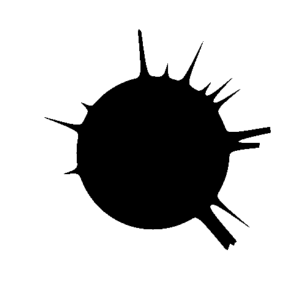

Run of com.github.skac112.klee.painters.FingerSun painter
Time: 22-12-04_09:11:42Git hash: f47110d
Painter parameters
- randSeed: 0
- circleRadius: 0.25
- backDecayFactor: 5.0
- sideDecayFactorFactor: 10.0
- numFinger: 19
- frontDecayFactor: 0.9
- averageLen: 0.1
Render parameters
- X range: <-0.5; 0.5>
- Y range: <-0.5; 0.5>
- nx: 500, ny: 500
